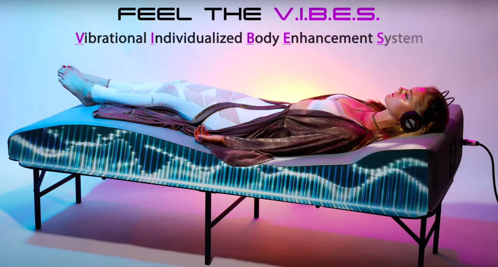
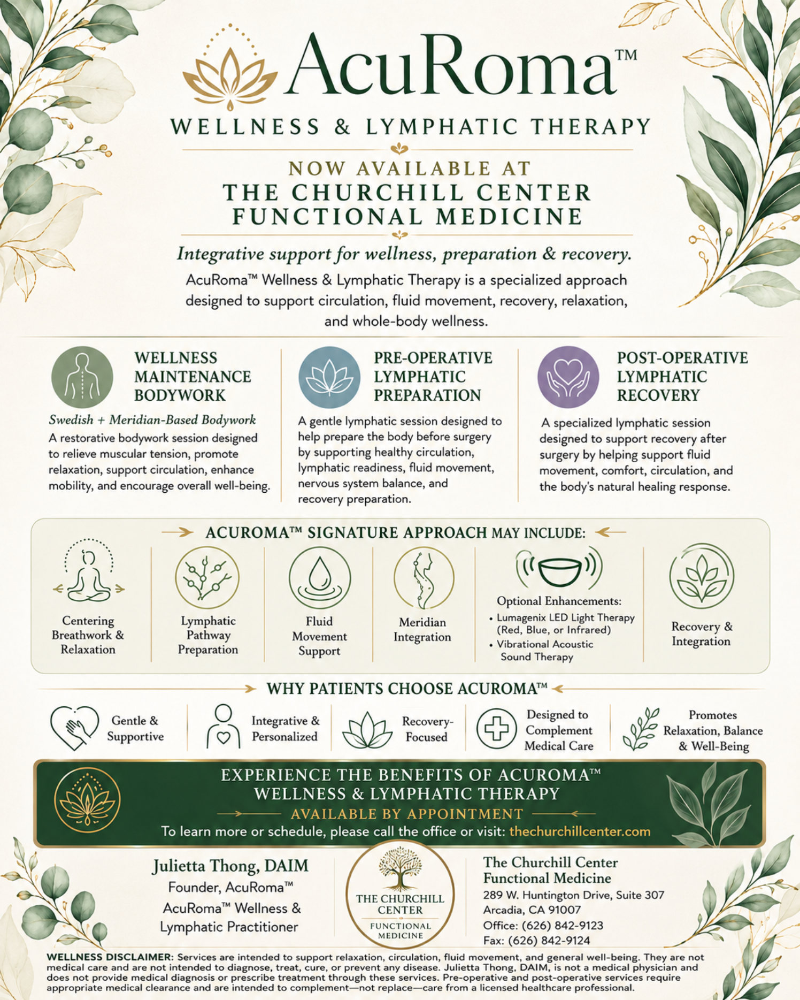
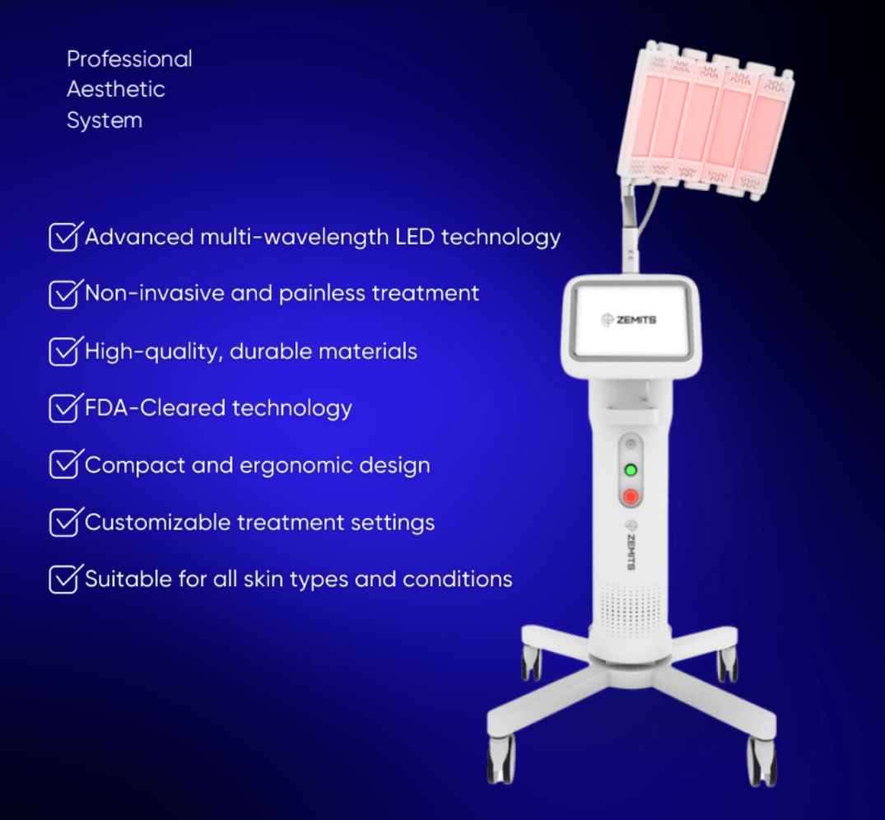

Therapies & Bodywork
V.I.B.E.S Sound Therapy
Vibroacoustic Sound Therapy System. This fully immersive multisensory system vibrates every cell in your body leaving you feeling relaxed, revived and rejuvenated.
View treatment →Treatments · Therapies & Bodywork
AcuRoma™ Wellness & Lymphatic Therapy Dr. Dana Churchill AcuRoma Medical Massage 1 hr 30 min The Churchill Center: 289 W Huntington Dr, Ste 307, Arcadia, CA 91007 Julietta does Medical Massage based on Lymphatics and Meridians; to gently open and release them. She can do pre-operative, post-operative, Lymphatic, and Swedish Massage. Appointment 1.30hs > […]

Dr. Dana Churchill
The Churchill Center: 289 W Huntington Dr, Ste 307, Arcadia, CA 91007
Julietta does Medical Massage based on Lymphatics and Meridians; to gently open and release them. She can do pre-operative, post-operative, Lymphatic, and Swedish Massage.
Dr. Dana Churchill
The Churchill Center: 289 W Huntington Dr, Ste 307, Arcadia, CA 91007
Julietta does Medical Massage based on Lymphatics and Meridians; to gently open and release them. She can do pre-operative, post-operative, Lymphatic, and Swedish Massage.

Therapies & Bodywork
Vibroacoustic Sound Therapy System. This fully immersive multisensory system vibrates every cell in your body leaving you feeling relaxed, revived and rejuvenated.
View treatment →
Therapies & Bodywork
LumaGenix LED Light Therapy Imagine a light-powered treatment that tackles your skin concerns while you relax at home. Stop imagining; it’s here! The Zemits LumaGenix is an FDA-cleared device that harnesses the power of LED light therapy to give you vibrant, rejuvenated skin. It’s like a superhero for your complexion, battling fine lines, wrinkles, acne, […]
View treatment →The Churchill Center · Arcadia
Consultations in person or virtual.